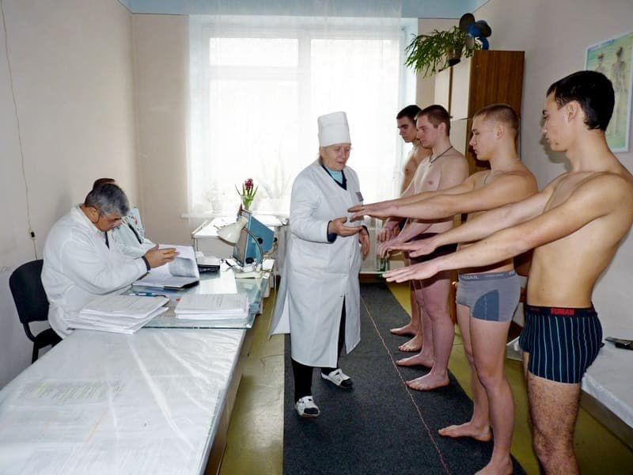
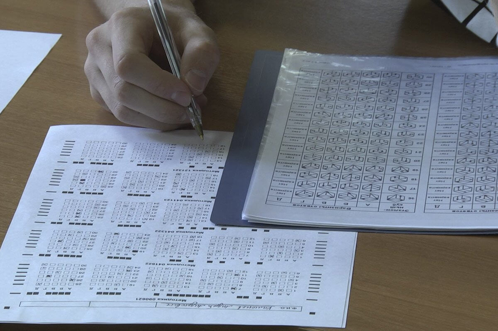

Как списать долг который не брал
Простое объяснение того, как устроена система: что написано в законах, что за чем следует, и какие есть реальные способы выйти из неё.
2026 — время, когда обычные способы уже не работают
«Долг» в виде службы в армии — это цепочка обязательств прописанная в законе.
За 7 минут твоего чтения этой статьи:
Итог чтения:
Ты знаешь как законно:
- не подлежать призыву
- не получать повестки
- освободится от военной службы
И быть для военкомата наравне с женщиной
Откуда вообще берётся воинская обязанность
Любые обязанности граждан берутся из законов.
Все законы Российской Федерации берут свое начало из конституции.
«Защита Отечества является долгом и обязанностью гражданина Российской Федерации. Гражданин Российской Федерации несёт военную службу в соответствии с федеральным законом.»

И граждане РФ несут военную службу в соответствии с Федеральным Законом №53 «О воинской обязанности и военной службе».
Все статьи ниже я буду приводит именно из него.
Что входит в воинскую обязанность
Воинская обязанность — это вся система обязательств перед военкоматом и государством.
Воинская обязанность
Воинская обязанность граждан Российской Федерации предусматривает:
- воинский учёт
- обязательную подготовку к военной службе; призыв на военную службу
- прохождение военной службы по призыву; пребывание в запасе
- призыв на военные сборы и прохождение военных сборов в период пребывания в запасе

Далее разберем по порядку пункты воинской обязанности.
Воинская обязанность №1. Воинский учёт
Обязанности граждан по воинскому учету
«Граждане обязаны состоять на воинском учёте.»

Первоначальная постановка на воинский учёт происходит когда юноше исполняется 17 лет, с 1 января по 31 марта:
Школа:
- централизованно собирает парней 16–17 лет
- выдаёт направления, иногда организует общий поход в военкомат.
Иногда происходит иначе и повестка приходит домой, либо вызывают через колледж/вуз.

Итог: ты — получаешь первичную категорию годности.

- проверяет документы, тесты, мед. данные
- принимает решение о постановке на учёт.
- выдаёт приписное удостоверение

Воинская обязанность №2. Призыв на военную службу
Представим:
- В 17 лет мы встали на воинский учёт.
- Нам исполнилось 18 лет.
Что дальше?
Граждане, подлежащие призыву на военную службу
«Призыву на военную службу подлежат граждане мужского пола в возрасте от 18 до 30 лет, состоящие на воинском учёте.»

Состоишь на воинском учёте → подлежишь призыву (ст. 22, п.1)
Обязанности Граждан, подлежащих призыву на военную службу
«Граждане, подлежащие призыву на военную службу, обязаны получать повестки военного комиссариата... и являться в указанные в повестке место и время.»

Пункт 1: Подлежишь призыву → обязан получать повестки (ст. 31, п.2)
Пункт 2: Обязан получать повестки → обязан являться по повесткам (ст. 31, п.1)
А что если повестки игнорить?
Что будет, если не являться
Неявка по повестке — это не просто игнорирование бумажки. Это нарушение конкретной правовой нормы с конкретными последствиями.
| Ситуация | Статья | Последствие |
|---|---|---|
| Первая неявка без уважительной причины | КоАП, Ст. 21.5 |
10 000 – 30 000 ₽ Административный штраф |
| Систематические неявки — расценивается как уклонение | УК РФ, Ст. 328 |
До 200 000 ₽ или до 2 лет лишения свободы Уголовная ответственность |
Итог:
- Состоишь на воинском учёте → подлежишь призыву. (ст. 22, п.1)
- Подлежишь призыву → обязан получать повестки (ст. 31, п.2)
- Обязан получать повестки → обязан являться по повесткам (ст. 31, п.1)
- Первая неявка → штраф 30.000₽ (ст. 21.5 КоАП РФ)
- Повторная неявка = Уклонение → от штрафа 200.000₽ до тюрьмы 2 года.
Являешься по повестке и:
- а каком-либо из этапов у тебя попросят документы
- вернут документы только после того как подпишешь повестку
- попадаешь в цикл, в котором ты пришёл по повестке и ушёл с повесткой, и так по всем повесткам
Воинская обязанность №3. Прохождение военной службы.
Тут всё понятно.
Нас подобный сценарий — НЕ УСТРАИВАЕТ.
Мы выяснили
1. Откуда берётся воинская обязанность (Статья конституции 59)
2. Что в неё входит:
3. Какие последствия влечет игнорирование обязанностей.
Зачем выяснили?
Чтобы понять как в армию не отправится — нужно понять как отправляют.
Как отправляют поняли — теперь нужно не отправится.
Какие есть способы не отправится в армию?
Как НЕ ОТПРАВИТЬСЯ В АРМИЮ?
3 СПОСОБА:
Способ 2: Категория «В» — ВСЕ?
Освобождение от призыва на военную службу
«От призыва на военную службу освобождаются граждане, признанные ограниченно годными к военной службе по состоянию здоровья.»

Окей, от срочной службы освобождают. Но что происходит дальше?
1. СЛОЖНОСТЬ
Нужные (необходимые) условия:
— Мед. история болезни.
А именно:
- история обращений (записи в амбулаторной карте, посещения поликлиники, обращения к профильным врачам, жалобы, назначения лечения, повторные жалобы.)
- анализы
- снимки
- результаты обследований
- выписки
- заключения врачей
На каждый твой чих — у тебя должна быть БУМАЖКА подтверждающая этот чих.
Важно
подтверждающая — что чихать ты начал НЕ вчера после получения повестки. История болезни должна быть сформирована заранее минимум за 9-12 месяцев.- Нет бумажки
- Нет задокументированной истории болезни подтверждающей непризывной диагноз (т.е. Категории «В»)
- Нет основания для освобождения от службы 🫡🪖
Путь(как долго, насколько сложно, какие сопротивления)
Соответственно: Нет истории болезни? — будешь собирать её с нуля.
Ты проделал такой огромный путь — и тебе могут выставить непризывной диагноз призывным и придётся оспаривать решение призывной комиссии подавая апелляцию.
-
Пишешь апелляцию сам: (90% случаев самостоятельного обжалования без найма
юриста за деньги):
- иск подал с неправильным ответчиком — грубо нарушил порядок подачи апелляции
- при неправильном оформлении — его даже не будут рассматривать = иск не сработает
- неправильно оформил иск = обжалование не вступило в силу = нет обжалования
- иммунитет который ты должен был получить на период обжалования — ты не получил
- О тебе принято решение направить к месту службы + иммунитета нет = любая неявка = ст. 328 УК РФ (уклонение)
Поэтому тратишь деньги, нанимаешь юриста, и он пишет апелляцию правильно вместо тебя.
Выход один — идти судится.
Это:
- деньги юристу за рассмотрение дела/изучение всех прилегающих документов + написание апелляции
- адвокатская деятельность в виде похода в суд (от 25к руб. за 1 поход)
- а поход будет не один
Шансы есть, просто это будет явно не один поход в суд и не одно обжалование
Спойлер: как выглядит отношение суда к апелляциям призывника на решение призывной комиссии:

Требование призывника: Признать незаконным решение комиссии о категории годности.

Требование призывника: Признать решение комиссии незаконным и отменить его.

Требование призывника: Признать решение призыва на службу незаконным.
Это три случайных дела по Москве, найденных за 5 минут. По стране таких тысячи.
И давай представим что ты всё же получил своё заветную Категорию «В» (ограничено годен)
Что она тебе даёт?
Освобождение от призыва на военную службу
«От призыва на военную службу освобождаются граждане, признанные ограниченно годными к военной службе по состоянию здоровья.»
Категория В = не идёшь на срочку на 1 год
Зачисление в запас
«Запас Вооружённых Сил Российской Федерации создаётся из граждан... признанных ограниченно годными к военной службе и освобождённых от призыва.»

Освобождён = Попадаешь в запас
Запас
«Для мобилизационного развёртывания (перевести армию с мирного времени на военнее) — создан запас вооружённых сил РФ, предназначен для использования в период мобилизации.»

То есть: освобождён от призыва → автоматически зачислен в запас. А запас создан для использования в период мобилизации. Это прямо написано в ФЗ-53, статья 51.2.
Запас = ресурс для приведения в боевую готовность во время мобилизации
Ограничено годен (категория В) = освобождён от призыва (статья 23)
Освобождён от призыва = зачислен в Запас (Статья 52)
Запас создан → для использования в период мобилизации (статья 51.2)
Затраты
- → на стрессе от беспредела потратишь кучу нервов от мыслей что тебя заберут
- → потратишь кучу денег на юриста
- → времени на сбор полного пакет мед.документв, апелляции решений которые тебе не должны были выносить (месяцы-год+)
В итоге ты:
Чтобы получить категория которая тебя не спасает не от военных сборов ни от запаса ни оо мобилизации
А что спасает?
Способ 3: Снятие с учёта — как это работает
Шаг 1. Что такое воинская обязанность?
Воинская обязанность
Воинская обязанность граждан Российской Федерации предусматривает:
- воинский учёт
- обязательную подготовку к военной службе; призыв на военную службу
- прохождение военной службы по призыву; пребывание в запасе
- призыв на военные сборы и прохождение военных сборов в период пребывания в запасе
Как Я ранее упоминал «воинская обязанность» — это не только срочная служба, а целый набор обязанностей. Об этом прямо говорится в расшифровке состава воинской обязанности.
Нам это понадобится далее.
Шаг 2. Кто обязан состоять на воинском учете
Организация воинского учёта
«Граждане обязаны состоять на воинском учёте, за исключением граждан... постоянно проживающих за пределами Российской Федерации.»

В ней сказано:
И дальше идет перечень исключений.
Среди них:
- граждане, постоянно проживающие за пределами Российской Федерации
- граждане, освобожденные от исполнения воинской обязанности.
Именно на эту конструкцию в разговоре обращалось внимание: обе категории находятся в одном перечне лиц, которые не обязаны состоять на воинском учете.
Шаг 3. Постоянно проживающие за пределами РФ исключены из системы воинского учета
Из статьи 8 следует:
Если гражданин постоянно проживает за пределами РФ, он не обязан состоять на воинском учете.
Следовательно:
- его не ставят на учет;
- либо снимают с учета;
- его личное дело перестает участвовать в механизмах учета военнообязанных.
В обсуждении это формулировалось как:
«...постоянно проживающие за пределами РФ относятся к категории граждан, которые не обязаны состоять на воинском учете.»
Шаг 4. Без воинского учета не работает сама воинская обязанность
Возвращаемся к статье 1.
Воинский учет является одним из элементов воинской обязанности.
Логика получается такой:
«воинский учет — один из компонентов воинской обязанности; если гражданин не подлежит воинскому учету, то на него не распространяется соответствующий механизм исполнения воинской обязанности»
Шаг 5. Что это означает для военных сборов?
Освобождение от военных сборов
«От военных сборов освобождаются граждане... пребывающие за пределами Российской Федерации.»
ФЗ-53, Статья 55, Пункт 2Постоянно проживающий за пределами РФ не подлежит призыву на военные
Здесь уже не логическая цепочка, а прямое указание закона.
Шаг 6. А что с мобилизацией?
О воинской обязанности и военной службе
«Гражданам, состоящим на воинском учёте, с момента объявления мобилизации запрещается выезд с места жительства без разрешения военного комиссариата.»
ФЗ-31, Статья 21То есть мобилизационный механизм законом привязан именно к гражданам, состоящим на воинском учете.. Если человек снят с учета в связи с постоянным проживанием за пределами РФ, он не относится к этой категории.
Правовая цепочка шаг за шагом
Собираем всё вместе в одну таблицу — каждый шаг подкреплён конкретной статьёй закона.
| ФЗ-53, Ст. 1 | Воинская обязанность включает воинский учёт как один из своих элементов |
| ФЗ-53, Ст. 8 | Постоянно проживающие за пределами РФ не обязаны состоять на воинском учёте |
| ФЗ-53, Ст. 55 | Пребывающие за пределами РФ освобождены от военных сборов |
| ФЗ-31, Ст. 21 | Мобилизационные обязанности адресованы только гражданам, состоящим на воинском учёте |
Итог
Постоянно проживающий за пределами РФ, снятый с учёта:
- Не подлежит призыву на срочную службу
- Не подлежит военным сборам
- Не входит в контур мобилизационного учёта
- Потому что не состоит на воинском учёте — а всё остальное к нему привязано
Важно: для этой логики ключевым является именно статус постоянного проживания за пределами РФ и снятие с воинского учета, а не факт нахождения за границей.
Эта комбинация вступает в силу в момент — когда у тебя есть задокументированное подтверждение о твоём постоянном проживании.
Вспоминаем мои слова в середине статьи:
Задача на уровне документов подтвердить твоё проживание за пределами РФ, а не уезжать туда и вуаля, повестки не приходят и ты можешь оставаться в РФ
но ДО момента подтверждения — вы всё ещё стоите на воинском учёте и на вас распространяются всё так же "обязанности граждан по воинскому учёту.
В эту обязанность в том числе зашита подачи документов о снятия с учёта в случае “уезда”соответственно, снимаемся с учёта мы опираясь на эту обязанность
Какие нужны документы и как всё оформить
Основание для снятия с учёта
IX. Обязанности граждан по воинскому учету
«Граждане, подлежащие воинскому учёту, обязаны сообщить в письменной форме в военный комиссариат о выезде на срок более шести месяцев.Направить соответствующее заявление в военный комиссариат»

❓А какое заявление надо направить❓
II. Перечень, формы документов воинского учета, порядок их хранения, заполнения, выдачи и замены
При снятии граждан с воинского учёта предоставляются:
- заявление о снятии с воинского учёта;
- документы, подтверждающие выезд за пределы РФ;
- действительные документы, подтверждающие право на постоянное проживание за рубежом.


И расширенное толкование понятия “постоянное проживание” в пункте 5, через подпункт 6 “о выезде на срок более 6 месяцев”
То есть: постоянное проживанием является = срок > 6 месяцев
ТО ЕСТЬ:
Нам нужно предоставить:
И мы можем сняться с учёта и выйти из системы любых обязанностей перед военкоматом
Какие документы могут юридически подтвердить постоянное проживание за пределами РФ?
Как выглядит процедура


Частые вопросы
Нужна помощь с оформлением?
Документы, полное сопровождение процедуры снятия с учёта, разбор вашей конкретной ситуации — бесплатная консультация.
Написать: @gromov_glebb